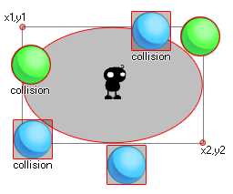

collision_ellipse( x1, y1, x2, y2, obj, prec, notme );
| Streit | Beschreibung |
|---|---|
| x1 | Die X-Koordinate der linken Seite der zu überprüfenden Ellipse. |
| y1 | Die y-Koordinate der oberen Seite der zu überprüfenden Ellipse. |
| x2 | Die x-Koordinate der rechten Seite der zu überprüfenden Ellipse. |
| y2 | Die y-Koordinate der unteren Seite der zu überprüfenden Ellipse. |
| obj | Das Objekt, das auf Kollisionen geprüft werden soll. |
| prec | Ob die Überprüfung auf pixel-perfekten Kollisionen (true = langsam) oder auf seiner Begrenzungsbox im Allgemeinen basiert (false = fast). |
| notme | Ob die aufrufende Instanz gegebenenfalls ausgeschlossen werden soll (true) oder nicht (false). |
Rückgabe : Instanz-ID oder nicht
Collision_ellipse verwendet die ersten vier Argumente (x1, y1, x2, y2), um die Breite und Höhe einer Ellipse innerhalb des aktuellen Raums zu definieren, und prüft dann, ob ein Objekt, das durch das Argument "obj" definiert ist, damit kollidiert Bereich. Diese Kollision kann als genau geprüft werden oder nicht, und Sie können auch nach der Instanz suchen, die den Code selbst ausführt oder nicht. Betrachten Sie dieses Bild:

Hier verwendet die Instanz in der Mitte eine Kollisionsellipse, um nach Ballobjekten zu suchen. Nun, die blauen haben keine genaue Bounding Box und wie Sie sehen können, auch wenn das Sprite nicht wirklich die Ellipse berührt, kann die Kollision noch passieren (auch wenn Sie die genaue Option in der Funktion auf True setzen) als die Der Begrenzungsrahmen dieses Sprites überlappt den elliptischen Bereich, der durch collision_circle definiert ist. Auf der anderen Seite werden die grünen Bälle nur dann in Kollision betrachtet, wenn das tatsächliche Sprite die definierte Ellipse überlappt. Denken Sie daran, dass für präzise Kollisionen sowohl das Objekt-Sprite als auch die Kollisionsfunktion genau markiert sein müssen. Es sollte auch angemerkt werden, dass der Rückgabewert der Funktion die ID einer der Instanzen sein kann, von denen angenommen wird, dass sie kollidieren.
if collision_ellipse(50, 50, 200, 100, obj_Player,
false, true)
{
instance_create_layer(obj_Player.x, obj_Player.y,
"Effects", obj_Splash);
}
Dies überprüft eine elliptische Zone innerhalb der Grenzen von 50x, 50y und 200x, 100y für das Objekt "obj_Player". Wenn es eine Kollision mit diesem Objekt gibt, wird eine Instanz von "obj_Splash" an den x / y-Koordinaten von obj_Player erstellt.